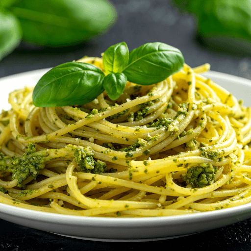
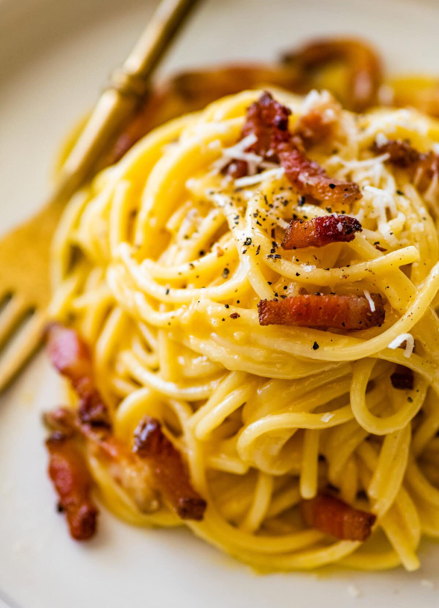
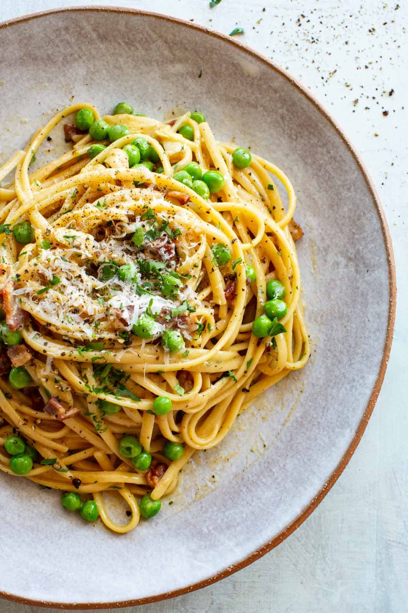
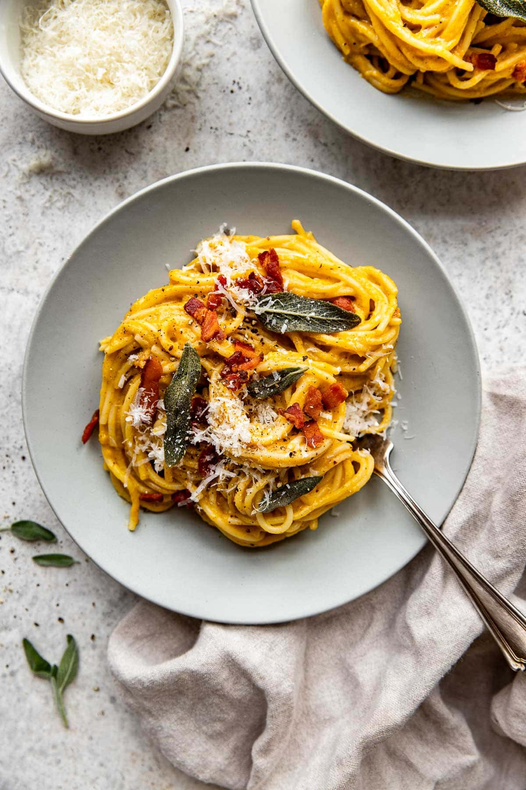

The Regional Mosaic
of Flavors
Italian cuisine is not a single entity but a collection of regional identities. Each shape and sauce tells a story of local ingredients.
Northern Italy
Pasta all'Uovo
Rich butter and cream sauces dominate. Think silky tagliatelle with slow-braised Bolognese or pappardelle with hare.
Southern Italy
Pasta Secca
Durum wheat and water create the perfect base for spicy tomatoes and fresh olive oils. Orecchiette with broccoli rabe reigns supreme.
Gallery

Pesto Genovese

Spaghetti Vongole

Authentic Carbonara

Tagliatelle Ragù

Orecchiette